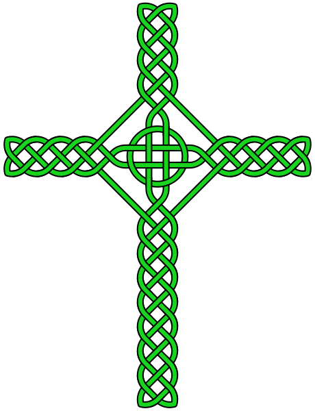
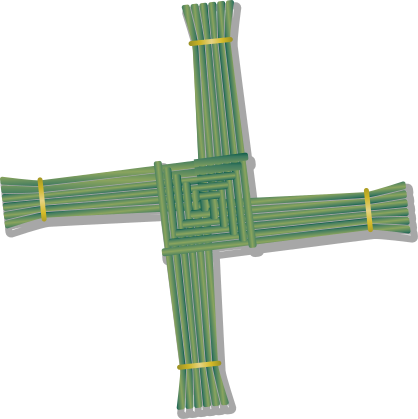

24 more cross designs
References 13–36. Crosses without a human figure. The preview sheets are PNGs; every reference has an SVG source. Some local assets are official PNG previews. Source artwork is unmodified apart from display size.
13 · Wood grain
 Sonshine_Penguin · OpenClipartCC0 / Public Domain
Sonshine_Penguin · OpenClipartCC0 / Public Domain14 · Floral grunge
liftarn · OpenClipartCC0 / Public Domain15 · Projected tunnel
GDJ · OpenClipartCC0 / Public Domain16 · Diamond outline
GDJ · OpenClipartCC0 / Public Domain17 · Diamond cutouts
PhilipBarrington · OpenClipartCC0 / Public Domain18 · Framed outline
PhilipBarrington · OpenClipartCC0 / Public Domain19 · Geometric inlay
OpenClipartCC0 / Public Domain20 · Ribbon wrapped
Firkin · OpenClipartCC0 / Public Domain21 · Celtic knot + ring

AnonMoosPublic domain22 · Ethiopian branch cross
KwamikagamiCC BY-SA 4.023 · Fleur-de-lis border
GDJ / OpenClipartPublic domain / CC024 · Jerusalem fivefold
OpenClipart / FreeSVGPublic domain / CC025 · Eight-point Maltese
OpenClipart / FreeSVGPublic domain / CC026 · Moline curved tips
paxed / OpenClipartPublic domain / CC027 · Circular lattice
OpenClipart / FreeSVGPublic domain / CC028 · Filigree outline
OpenClipart / FreeSVGPublic domain / CC029 · Canterbury cross
Life of RileyCC BY-SA 4.030 · Tau cross
Johannes RösselCC BY-SA 3.031 · Woven Brigid cross

MelianPublic domain32 · Cross of Lorraine
Johannes RösselPublic domain33 · Dove arch cross
j4p4nCC0 / Public domain34 · Floral cross
OpenClipart / FreeSVGCC0 / Public domain35 · Cross and Bible
OpenClipart / FreeSVGCC0 / Public domain36 · Coptic ornament
SagredoCC BY 3.0